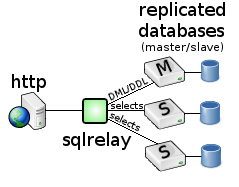

Query routing sends queries that match one pattern to one set of database servers and queries that match another pattern to another set of servers. A comon use for query routing is to route DML and DDL queries to a master and distribute select queries over a pool of slaves.
Query filtering prevents queries that match a certian pattern from being run at all. There are often certain queries that will bring the entire database to its knees. A common use for query filtering is to identify those queries and prevent them from being run.
For example, select * from hugetable where id=100 might be fine...

...but select * from hugetable without a where clause might crush the database.

SQL Relay can be configured to allow one and reject the other.
The configuration is a bit more complex than suggested by these diagrams, but a complete descripton of query routing and filtering with example configuration files is given here.